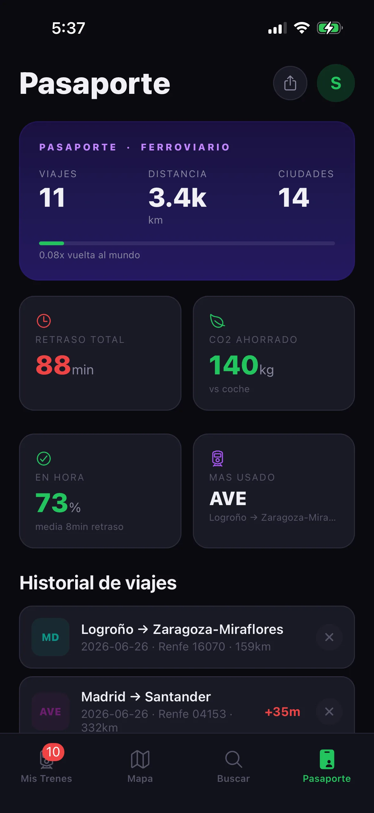
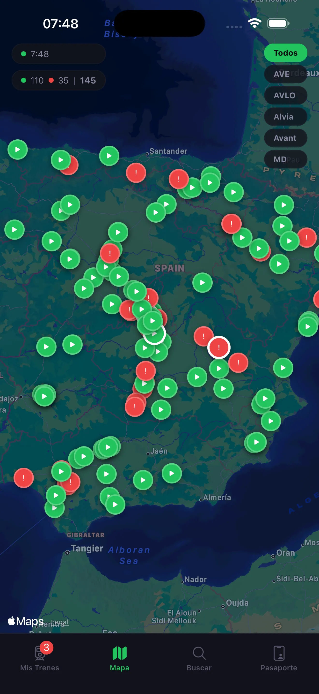
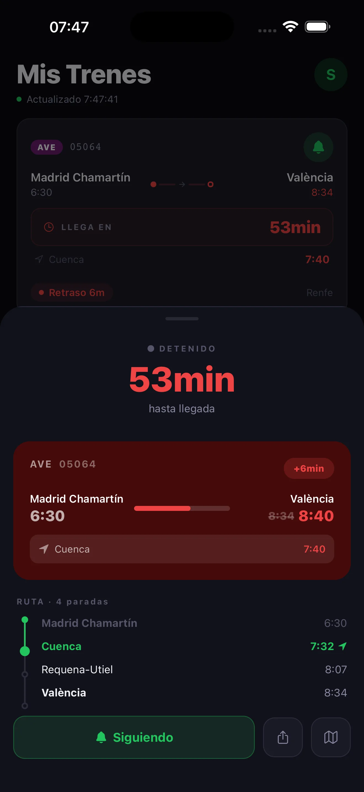
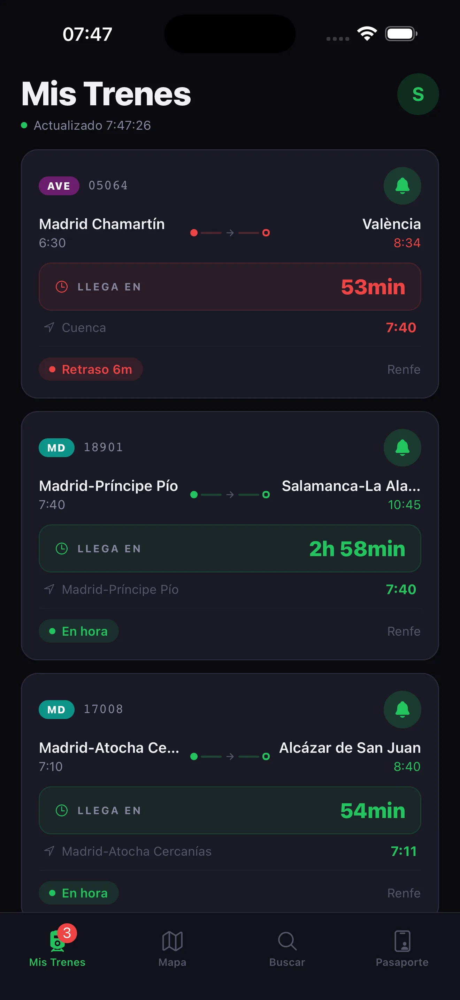

¿Qué es Andén?
Andén es una app para seguir trenes en tiempo real en España, consultar retrasos, rutas, horarios por estación y guardar tu historial ferroviario.
Consulta ubicaciones, retrasos, rutas, horarios por estación y todo tu historial ferroviario.
Gratis · Solo iOS · Próximamente Android

Desde el mapa en tiempo real hasta tu historial personal de viajes.
Más de 200 trenes AVE, AVLO, Alvia, Avant y MD moviéndose por España, actualizados cada 15 segundos.
Countdown hasta llegada, retraso actualizado, barra de progreso y próxima parada.
Todas las estaciones intermedias con horarios de llegada y salida, y el estado actual del recorrido.
Salidas y llegadas de más de 1,000 estaciones. Toca cualquier tren en vivo para ver su detalle.
Kilómetros recorridos, ciudades visitadas, CO2 ahorrado, puntualidad y tipo más usado.
Sin cuenta, sin anuncios, sin tracking. Tus datos se quedan en tu dispositivo.
Sin registro. Sin complicaciones. Abre y viaja.
Ve todos los trenes de larga distancia moviéndose en tiempo real por España. Filtra por tipo: AVE, AVLO, Alvia, Avant o MD.
Selecciona cualquier tren para ver su ruta completa, próxima parada, retraso actualizado y countdown hasta la llegada.
Pulsa "Seguir" y el tren aparece en tu lista. Se guarda automáticamente en tu pasaporte ferroviario al completar el viaje.



Más de 200 trenes de larga distancia, actualizados cada 15 segundos.
Lo esencial sobre Andén antes del lanzamiento.
Andén es una app para seguir trenes en tiempo real en España, consultar retrasos, rutas, horarios por estación y guardar tu historial ferroviario.
Está en desarrollo y estará disponible próximamente para iOS. La versión para Android llegará más adelante.
La app está pensada para trenes de larga distancia y Media Distancia en España, incluyendo AVE, AVLO, Alvia, Avant y MD.
No. Andén es una aplicación independiente y no está afiliada, patrocinada ni operada por Renfe.
Disponible gratis en App Store. Sin suscripción, sin anuncios, sin registro.
Descargar en App Store